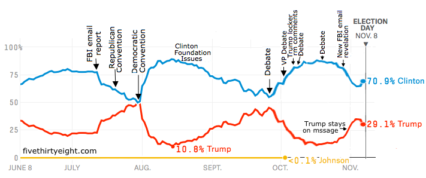

PSTAT 234 - Data Wrangling, Web Scraping & APIs
Assignment 1
PSTAT 134 (Spring 2025)
Due Date: May 4th, 11:59 PM
Part I - Case Study: New York Times Ad Impressions (Simulated)
There are 10 data sets in the /data sub directory named nyt1.csv, nyt2.csv, …, nyt10.csv. Each file represents one day’s worth of simulated data on ad impressions and clicks on the New York Times homepage. Each row represents a single user. There are five columns:
Age(user’s age)Gender(user’s gender, coded as0= female,1= male)Impressions(number of ads displayed during the user’s visit)Clicks(number of clicks made by the user)Signed_In(whether or not the user was signed in as a member)
- Load a single data file. Write a single bash command that lists (or otherwise “loads”) all ten CSV files: nyt1.csv through nyt10.csv; from the /data directory by matching their file names with a regular expression.
Hint: you might combine ls /data with grep -E '^....$' so that only nyt1.csv, nyt2.csv, …, nyt10.csv are selected.
Create a new variable,
age_group, that categorizes users into the following age groups: < 18, 18-24, 25-34, 35-44, 45-54, 55-64, and 65+.Plot the distributions of impressions and “click-through rate” for all 6 age categories. (Note: Click-through rate is defined as the number of clicks divided by the number of impressions; it represents the proportion of ads that generated clicks.)
Create a new variable to categorize users based on their click behavior. (The name and categories for this variable are up to you. Explain what decision[s] you make and why.)
Explore the data and make visual and quantitative comparisons across user segments/demographics to answer the following:
How do <18 year old males differ from <18 year old females in terms of clicks and impressions?
How does the distribution of click-through rate for users who are signed in differ from the distribution for those who are not signed in?
Are certain age groups more likely to be signed in than others? Which ones?
Calculate summary statistics for the click-through rate. These should include (1) quartiles, (2) mean, (3) median, (4) minimum and maximum, and (5) variance. Choose two user segments to compare these statistics across (for example, compare the mean, median, and quartiles for users 25-34 to those for users 65+).
Summarize your findings in a brief (1-2 paragraph) report intended for a New York Times (NYT) advertising team.
Part II: Analyzing the Weather
In this section, you will gain more practice working with public APIs, this time using a public weather API, WeatherAPI. The first thing you’ll need to access the API is an API key. You can sign up for a key here: https://www.weatherapi.com/signup.aspx
Exercise 1
Use the http://api.weatherapi.com/v1/current.json URL to access the API and obtain real-time weather data. Note that you will want to specify three query parameters, at least – key, which should be set to your individual API key, q, which should equal the city name of a specified location – for example q = "Isla Vista" – and aqi, which indicates whether you want to obtain air quality data ("yes" or "no").
Obtain current real-time weather data for fifty cities. I have saved a data file containing the names of fifty cities to /data/cities.csv. This ensures that you are all working with the same locations (although your results will still differ, depending on when you obtain the data).
Exercise 2
Write code in R or Python (your choice) to extract and store the following data for each location:
City name
Country
Whether or not it is currently daytime there
Temperature (in Fahrenheit)
Humidity
Weather description (
conditiontext; for example, “Mist”, “Clear”, etc.)Wind speed (in miles per hour)
Precipitation (in millimeters)
US EPA air quality index (ranges from \(1\) to \(6\), representing the 6 categories of air quality: https://www.airnow.gov/aqi/aqi-basics/)
Exercise 3
Create a scatterplot of temperature vs. humidity. Add a linear regression line to the plot. What are the estimated intercept and slope values for this linear regression? Does there appear to be a significant relationship between temperature and humidity?
Exercise 4
Create a bar chart of the EPA air quality index values. What does the distribution of air quality look like? Identify the location(s) with the best air quality and the worst air quality.
Exercise 5
Create a bar chart of the current weather description. Which conditions are the most common? Which are the least?
Part III: Scraping Books
In this section, you’ll practice your web scraping skills by experimenting with a fictional online bookstore located at https://books.toscrape.com/. Use the tools that we demonstrate in class to do the following, in either R or Python (your choice):
Exercise 6
Scrape the first 20 results from this site. Create a data frame (or tibble) that stores the following for each book:
Title
Price (excluding tax)
Star rating
Whether the book is in stock
Exercise 7
Create a histogram of prices for these 20 books. What is the average price?
Exercise 8
Create a bar chart of star rating for these 20 books. Find the book(s) with the highest and lowest star ratings.
Part IV: 2018 US House Elections

image credit
{kind=link}
We haven’t talked about predictive models, but we can still think about what makes a “good” prediction. In this assignment, we’ll focus on evaluating the quality of election predictions made by the website fivethirtyeight.com. As one prominent example, fivethirtyeight predicted that Clinton had a 70.9% chance to win the election. Was their model wrong?
To gain insight into questions like this, we’ll focus on US House elections predictions from 2018. Their predictions are based predominantly on polling data but include other sources as well (state of the economy, overall favoriability of politic parties, etc).
This homework is based loosely on this article. Please read the article before beginning the assignment.
Question 1: Data Processing
Download and Read Data
Download the raw CSV file from fivethirtyeight’s GitHub repository: Write a single Bash command that downloads the raw CSV from FiveThirtyEight’s GitHub into your /data directory. Your command should:
Use either
curlorwgetSave the file as
us_house_elections.csv
In your working environment store the dataset in an object called election_data. Add a column of zeros named bin (we will populate this column with meaningful data later) and preview the first 10 rows of the dataset.
Fivethirtyeight has three different prediction models: lite, classic and deluxe, which roughly incorporate an increasing number of assumptions. In this assignment we’ll focus on evaluating the quality of the classic predictions. You can read more about how the prediction models work here.
Fivethirtyeight continuously updated their predictions as more polling data became available for each of the races. Let’s focus on the predictions a few months before the election, on August 11th, and on the morning of election day, November 6th.
Question 1a: Subset Data
Create a new data frame called election_sub by filtering to include only rows in which the forecast_type is “classic”, and the date of the forecast (forecast_date) is 8/11 or 11/6.
Question 1b: Filtering Data
In the previous question, data was subset for two forecast dates: 2018-11-06 and 2018-08-11. Presumably, there should be two rows (predictions) for each candidate; however, you will see that some candidates are missing one of the two predictions and not all name entries are valid.
Remove any missing names and any candidates that do not have two predictions.
Question 1c: Transform Data
We want to check whether events predicted to occur with probability close to X% actually occurred about X% of the time.
First, define cut_points as 20 equally spaced numbers between 0 and 1. Then group the predicted probabilities into the 19 equally spaced bins determined by those cut points. Define the bin for each observation using a binning function (such as cut) on the probwin variable and assign the result to the column bin of election_sub.
Question 2: Looking for Insights
Question 2a: Calculate Change in Support
Find the candidates whose standings changed the most between August 11 and November 6: one with the largest improvement and another with the largest decrease in win-probability.
Question 2b: Identify Candidates
Now, save the name of the candidates to string variables: rising_candidate (largest increase) and falling_candidate (largest decrease).
Question 2c: Verify Outcome
Did the candidate win or lose the election? Verify with election outcome.
Prediction vs Actual Outcomes
Question 3a: Prediction Histogram
Make a histogram showing the predicted win probabilities on the morning of the election. Again, restrict yourself to only the classic predictions.
Question 3b: Prediction Difficulty
Are most house elections easy to forecast or hard to forecast? State your reasoning.
Question 4a: Compute Actual Outcomes
Now we’ve grouped the observations into a discrete set of bins according to the predicted probability probwin. Within each bin, compute the actual fraction of times the candidates won.
Save the fraction of actual wins in each bin in a list or vector called fraction_outcome.
Question 4b: Preparing to Present Results
Compute the midpoints of each bin from cut_points to use as the predicted value.
Question 4c: Visualize Results
Make a scatterplot using midpoints as the x variable and fraction_outcome as the y variable. Draw a dashed line from [0,0] to [1,1] to mark the line y = x.
Quantifying Uncertainty
Question 5a: Model-based Error Estimation
Classical results tell us that the observed fraction of wins in bin \(k\), \(\hat p = \frac{Y_k}{n_k}\) has variance \(\frac{p_k(1 - p_k)}{n_k} \approx \frac{\hat p_k(1 - \hat p_k)}{n_k}\).
Use this to compute 95% confidence intervals for the actual proportions. Create a new aggregated data frame election_agg that contains the mean and count of probwin_outcome by bin. Then use these to compute the estimated standard error and confidence interval width (1.96 * standard error).
Question 5b: Visualize Error Bars
Create a new plot with error bars associated with the actual fraction of wins in each bin. Add a dashed y = x line.
Question 5c: Computing Coverage
Compute what fraction of the 95% confidence intervals cover the bin midpoint (i.e., overlap with the y = x line).
Question 5d: Understanding Confidence Intervals
Are the 95% confidence intervals generally larger or smaller for more confident predictions (e.g. closer to 0 or 1)? What factors determine the length of the confidence intervals?